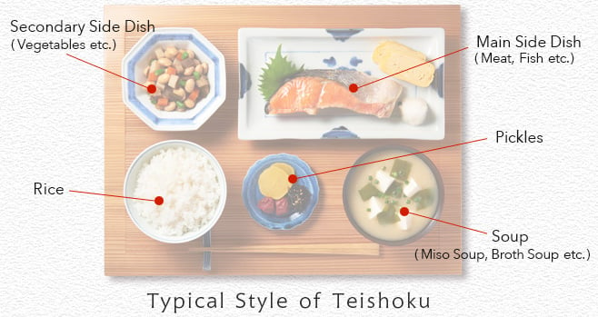

Word on Mindful Eating
How you eat is a reflection of how you live.
Japanese have over 400 terms to describe texture while English has 77. That sheer fact itself displays the key to mindful eating, to pay attention to the details. Is it crunchy?, What kind of crunchy?, Is it chewy?, What is the after-taste like? and so on.
Expressing gratitude for everything between one's presence and the ability to eat, to all the utensils and the ingredients and have the recipe come together is all part of the process that one can be grateful for. Appreciating a dish accentuates and heightens the smells and the flavors along with expressing gratitude for the moment.
